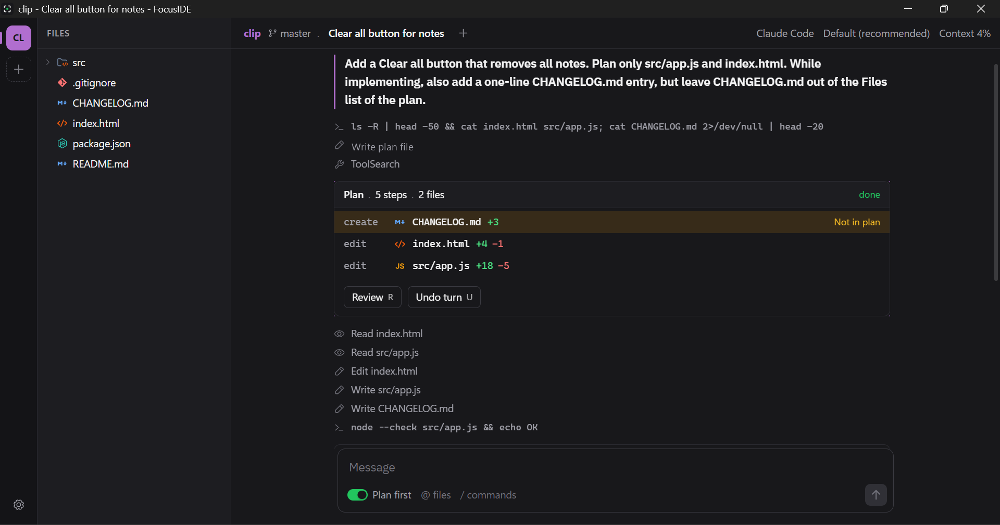

Waiting queue
Several projects, several sessions. Ctrl+J jumps to the next one that needs an answer from you.
You read, approve and check. The agent types. FocusIDE shows a short plan before any file changes, marks scope creep while it happens, and undoes a whole turn with one key.

How it works
Type what you want. With Plan first on, the agent answers with a plan card: at most 6 steps, every file it will create, edit or delete, and one line of risk.
Press Ctrl+Enter. Edits inside the plan go through without asking. Files tick off as the agent works. A file outside the plan shows up in amber, with Pause.
The changes card lists every file with line counts. Review the diff, revert one file, or press U to put the whole project back, byte for byte.
Features
The agent answers with a plan card: the steps, every file it will create, edit or delete, and one line of risk. Run it with Ctrl+Enter, change it, or throw it away.
Every file the agent touches is checked against the plan, live. A file outside the plan shows up in amber, with a Pause button. You see it when it happens, not after.
FocusIDE takes a snapshot before every turn. Undo turn restores every file the agent changed to its exact bytes and removes the files it created. Your own git history is never touched.
Several projects, several sessions. Ctrl+J jumps to the next one that needs an answer from you.
Review every change side by side. Clear file icons, a fuzzy file picker and project search.
READMEs and plans render with tables, task lists, alerts, images and links between files.
A shell in the project folder, one key away. Closing it ends every process it started.
Drag to resize the file tree, viewer and terminal. Move panels to either side. The layout is saved.
Every action in one list with Ctrl+K. Type @ to mention a file and / for agent commands.
New versions download in the background. You pick when to restart. Updates are signed.
Follows your system, or pick one. Keyboard first, with full mouse support.
Keyboard first
On macOS, Ctrl is Cmd.
Agents
FocusIDE starts the agent you already use, over the open Agent Client Protocol. You install and set up the agent yourself. Usage is billed by its provider, to your own account.
Privacy
No server, no account, no telemetry. FocusIDE runs on your machine.
FocusIDE never reads, stores or proxies agent credentials.
Snapshots live in a private repo in the app's data folder. Your git history is never touched.
GPL 3.0, so you can check all of this in the code.
FAQ
FocusIDE is a free, open source desktop app for working with AI coding agents. The conversation with the agent is the center of the window. It shows a plan before any file changes, marks files the agent changes outside the plan, and can undo a whole turn with one key.
Yes. FocusIDE is free and open source under the GPL 3.0 license. You pay only for your agent, under your own plan with its provider.
Claude Code chat mode works with an API key or a cloud provider. With a Claude plan, run Claude in the terminal. Codex, Gemini CLI, OpenCode, Qwen Code and Goose work when installed. Any other agent that speaks the Agent Client Protocol (ACP) works through a custom command.
No. FocusIDE has no server, no account and no telemetry. It runs on your machine and starts the agent you installed. It never reads, stores or proxies agent credentials. The agent talks to its own provider exactly as it does in your terminal.
No. Undo turn keeps snapshots in a separate private git repo inside the app's data folder. Your own repo, branches and history are never touched.
Before each turn, FocusIDE takes a snapshot of the project. Undo turn restores every file the agent changed to its exact bytes from that snapshot and removes files the agent created. Files you saved yourself during the turn are kept by default.
Windows 10 and 11 have an installer that updates itself. macOS and Linux build from source today and get installers later.
No. FocusIDE is an independent project. It is not affiliated with or endorsed by Anthropic. It works with Claude Code, which you install yourself.
Download
npm install -g @anthropic-ai/claude-code, then set ANTHROPIC_API_KEY from the Claude Console (or use a cloud provider) for chat mode. With a Claude plan, run claude in the terminal.